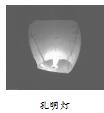
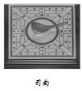
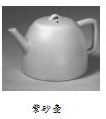
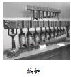
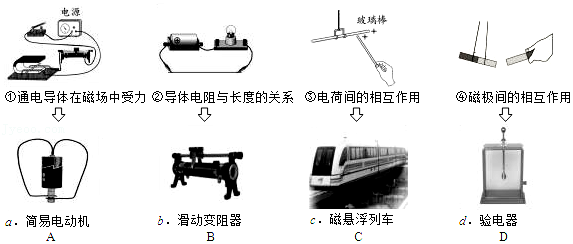
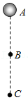

2016年北京市中考物理试题 · 选择题 第16、17、18、19题
（多选）16．（2分）下列说法中正确的是（ ）
A．一杯水的比热容比一桶水的比热容小
B．晶体在熔化过程中吸收热量，温度不变
C．组成物质的分子之间，只存在引力，不存在斥力
D．长时间压在一起的铅板和金板互相渗入，这种现象是扩散现象
（多选）17．（2分）如图展示了我国古代劳动人民的智慧成果，对其中所涉及的物理知识，下列说法中正确的是（ ）
A．

孔明灯在上升过程中，只受重力B．

司南能够指南北是利用了磁体受地磁场的作用C．

紫砂壶属于连通器D．

正在发声的编钟一定在振动（多选）18．（2分）如图所示，①②③④为探究物理规律的四个实验，abcd为物理规律的应用实例，箭头表示规律和应用的对应关系，其中对应关系正确的是（ ）

A．AB．BC．CD．D
（多选）19．（2分）一个小球从A点由静止开始下落，速度越来越大，相继经过B、C两点，如图所示。若A、B两点间的距离等于B、C两点间的距离，则下列说法中正确的是（ ）

A．小球在下落过程中动能不变
B．小球在C点的重力势能小于在B点的重力势能
C．小球所受的重力在AB段做的功等于在BC段做的功
D．小球所受的重力在AB段做功的功率小于在BC段做功的功率